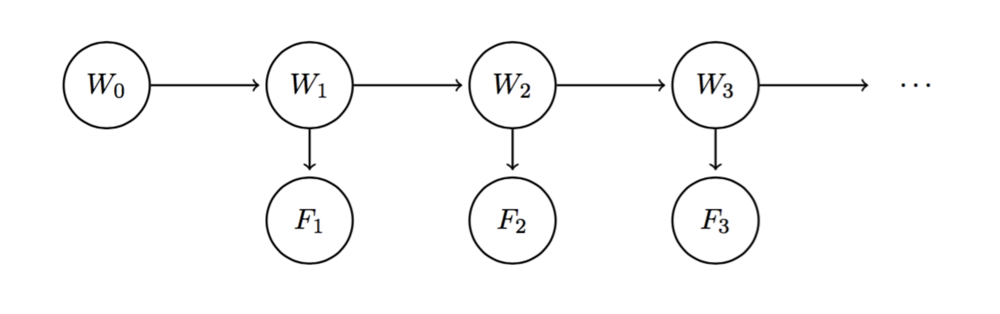

Markov Models
-
Markov Models
-
Basically a chain-like, infinite-length, time-dependent bayes' net
-
Uses a separate random variable for a field on each time-step
For example \(W_i\) can be the weather on day \(i\)
-
e.g. Weather Model:
\(W_0 \rightarrow W_1 \rightarrow W_2 \rightarrow W_3 \cdots \)
-
Described with initial distribution \(P(W_0)\), and
transition model \(P(W_{i+1} | W_{i})\)
-
Uses the same transition model for each time step, i.e. transition model is stationary
-
Satisfies the markov property: \(\begin{equation}
W_{i+1} \perp\!\!\!\perp \left\{W_{0}, \dots, W_{i-1}\right\} | W_{i}
\end{equation}\)
-
Mini-Forward Algorithm
-
Essentially summing out as you go
-
\(
P\left(W_{i+1}\right)=\sum_{w_{i}} P\left(W_{i+1} | w_{i}\right) P\left(w_{i}\right)
\)
-
Stationary distribution: distribution when \(i\) goes to infinity and the distribution converges
-
The stationary distribution can be found by taking the eigenvector of the transition model
-
Hidden Markov Models
-
State Variables \(W_i\)
-
Evidence Variables \(F_i\)
-
State variables are unobserved, evidence variables are observed
-
Example network:

-
Assume transition model \(P(W_{i+1} | W_i)\) and sensor model \(P(F_i | W_i)\) stationary
-
Belief distribution with all evidence up to timestep \(i\) observed:
\(B\left(W_{i}\right)=P\left(W_{i} | f_{1}, \ldots, f_{i}\right)\)
i.e. true distribution
-
Belief distribution with all evidence up to timestep \(i-1\) observed:
\( B^{\prime}\left(W_{i}\right)=\operatorname{Pr}\left(W_{i} | f_{1}, \ldots, f_{i-1}\right) \)
i.e. predicted distribution